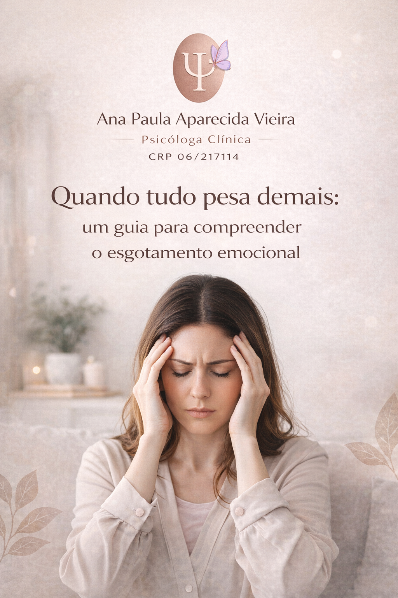
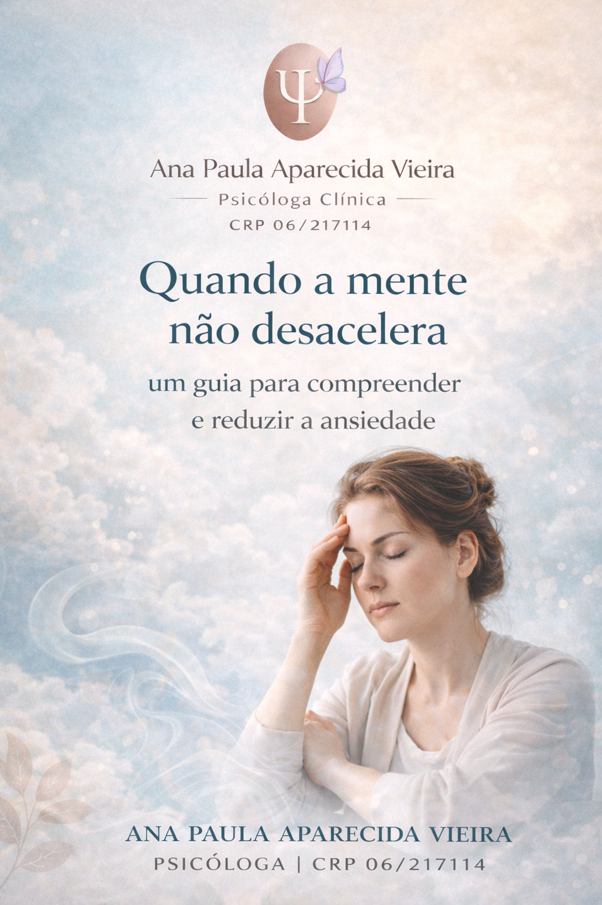
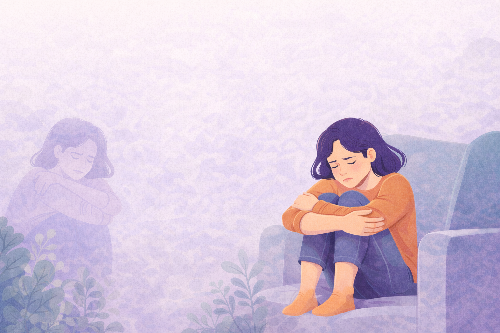
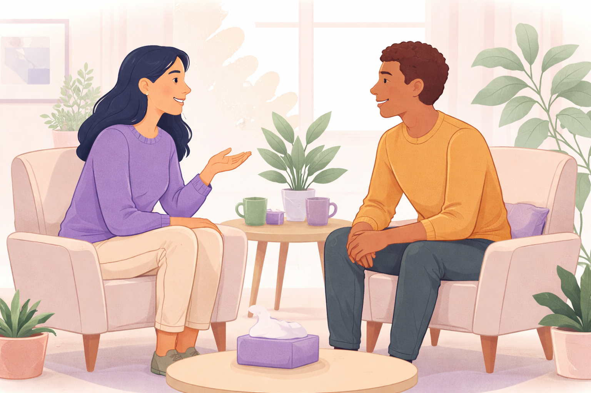
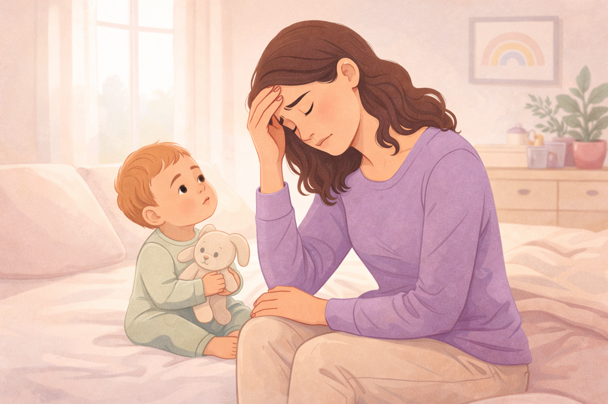

Sobre o Atendimento
Você não precisa estar “no limite” para buscar ajuda. Entenda como funciona a psicoterapia, o que esperar das sessões e como esse espaço pode apoiar fases difíceis.

Aqui você encontra conteúdos psicoeducativos sobre ansiedade, cansaço emocional, autoestima, relações e fases da vida. A ideia é orientar com acolhimento e clareza, sem rótulos e sem julgamentos.
Há artigos gratuitos e, em alguns temas, guias digitais (conteúdos pagos) para quem deseja aprofundar com mais estrutura.
Conteúdos sobre psicoterapia infantil, terapia para adolescentes, psicoterapia para adultos e orientação parental.
Você não precisa estar “no limite” para buscar ajuda. Entenda como funciona a psicoterapia, o que esperar das sessões e como esse espaço pode apoiar fases difíceis.

Mudanças de comportamento, choro frequente, irritação, regressões ou dificuldades na escola podem ser sinais emocionais. Saiba quando procurar e como o cuidado acontece.

Adolescência envolve identidade, pertencimento, autoestima e mudanças intensas. A terapia é um espaço de escuta sem julgamento para organizar emoções e fortalecer autonomia.

Ansiedade, autocobrança, cansaço mental e sobrecarga podem virar um ciclo silencioso. A psicoterapia ajuda a compreender padrões e construir caminhos mais leves.

Educar pode gerar culpa, exaustão e insegurança. O acompanhamento psicológico oferece apoio para fortalecer vínculos, construir limites e organizar a rotina com segurança emocional.
Materiais psicoeducativos em formato digital, desenvolvidos como conteúdos de apoio e orientação emocional. Alguns materiais estão disponíveis para acesso imediato mediante aquisição, enquanto outros conteúdos deste espaço permanecem gratuitos, com o mesmo cuidado e compromisso com sua compreensão emocional.

Um guia para compreender sinais de esgotamento emocional, reconhecer limites e iniciar um caminho de cuidado consigo mesmo(a), com acolhimento e clareza.
Conteúdo pago • acesso imediato
Guia psicoeducativo para compreender a ansiedade e os pensamentos acelerados, com linguagem acessível, acolhedora e baseada na Psicologia científica.
Conteúdo pago • acesso imediatoTextos para reconhecer sinais, compreender emoções e encontrar caminhos de cuidado com clareza e acolhimento.

Quando a autocrítica vira rotina, o valor próprio passa a depender de desempenho e aprovação. Entenda sinais e como a psicoterapia ajuda a reconstruir uma relação mais gentil consigo mesmo.

Excesso de responsabilidade, autocobrança e a sensação de “não poder parar” podem virar ansiedade. Veja sinais, gatilhos e caminhos de cuidado emocional.

Pensamentos acelerados, tensão no corpo, medo do futuro e dificuldade de desligar? Reconhecer os sinais é o primeiro passo para entender como a terapia pode ajudar.

Tristeza persistente, desânimo, culpa e sensação de vazio nem sempre aparecem do nada. Entenda sinais, impactos e quando procurar ajuda psicológica.

Quando você continua fazendo tudo, mas por dentro já pediu pausa: irritabilidade, apatia e sobrecarga mental. Saiba como identificar e começar a se cuidar.

Descansar e ainda assim acordar cansado(a), perder o prazer nas coisas e sentir que nada é suficiente pode ser esgotamento. Entenda o que está por trás e como buscar apoio.

Pressão constante, ansiedade ao começar o dia e sensação de estar sempre atrasado(a) podem sinalizar desgaste. Aqui você encontra um conteúdo para reconhecer limites e reorganizar o cuidado emocional.

Autocuidado não é só descansar: é aprender a se respeitar, reconhecer necessidades e parar de se abandonar. Veja passos simples e realistas para começar.

Autocrítica, comparação e insegurança podem afetar relações e escolhas. Entenda como a autoestima se constrói e por onde recomeçar com mais gentileza.

Se entender melhor ajuda a reduzir ansiedade, melhorar decisões e fortalecer limites. Um espaço de leitura para iniciar o autoconhecimento de forma prática, sem cobranças.

Dificuldade de colocar limites, medo de desagradar, discussões que viram distância… Entenda como comunicação e vínculo podem ser construídos com cuidado.

“Será que estou sendo uma boa mãe?” Entenda por que a culpa materna é tão frequente, como ela se manifesta e como a terapia ajuda a construir uma maternidade mais gentil.

Limites, comunicação e vínculos: quando a relação faz mais bem do que mal. Entenda sinais e como construir conexão com respeito.
Textos voltados para crianças, adolescentes e famílias.

Como a terapia ajuda a criança a expressar emoções, lidar com medos e fortalecer recursos internos. Entenda o processo e como a família pode participar com acolhimento.

Sinais como irritação, regressões, dificuldades na escola, ansiedade e mudanças no sono podem indicar sofrimento. Saiba quando buscar psicoterapia infantil e como começar.

Oscilações de humor, conflitos, pressão escolar, insegurança e isolamento podem ser pedidos de ajuda. Entenda como a psicoterapia pode apoiar essa fase.